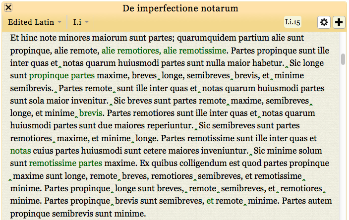

  <div class="content">
  	<div class="contentbox">
      <div class="explanation navigation">
          <div class="explanation-row">
            <div class="cell"></div>
            <div class="cell"><a href="../#">Up (website guide)</a></div>
            <div class="cell"></div>
          </div>
        <div class="explanation-row">
          <div class="cell"><!-- <a href="../../#">Back (website introduction)</a> --></div>
          <div class="cell"></div>
          <div class="cell"><a href="2.html">Next (variant pop-ups)</a></div>
        </div>
      </div>
      <h3>The edition pages: viewing variants I</h3>
      <p>You can make variants visible using the option in the
        <a href="../Edition/4.html">settings (cog) menu</a>. Loci of
        variation are shown in green, with insertions displayed as a
        caret below the baseline of the text.</p>
      <p>Hovering over a locus of variation <a href="2.html">shows more information</a>.</p> 
      <div class="helpshot h716">
        
      </div>
    <!--end .contentbox -->
  	</div>
    <!-- end .content -->
  </div>